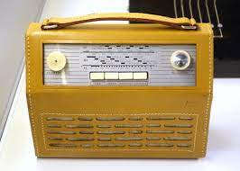

Believe in a Smiling God
Believe in a Smiling God
Where would we be without community radio? We wouldn't be anywhere! After all, I've been the host at this very radio station for as long as I can remember! I don't need to go anywhere else, this small room with a microphone and a two way mirror so I can be monitored by Strexcorp is my home! And I wouldn't have it any other way! In fact, what else is there to say about it? This place is